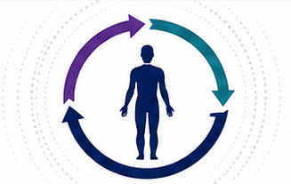
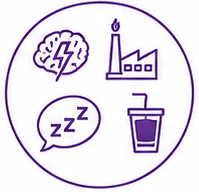
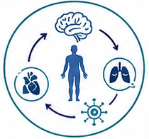
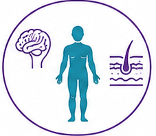
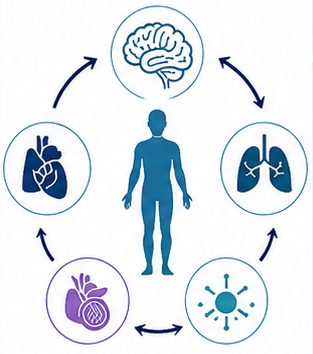
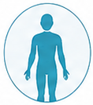
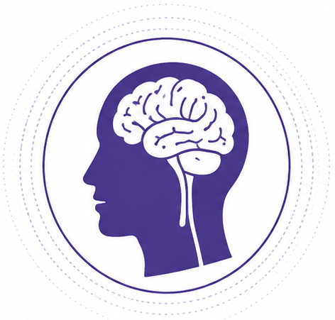
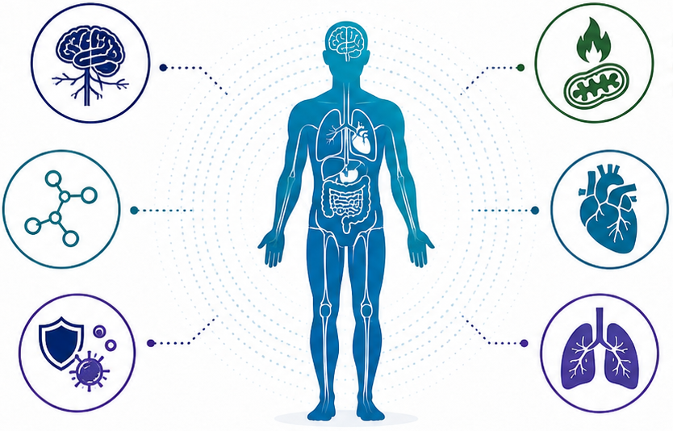
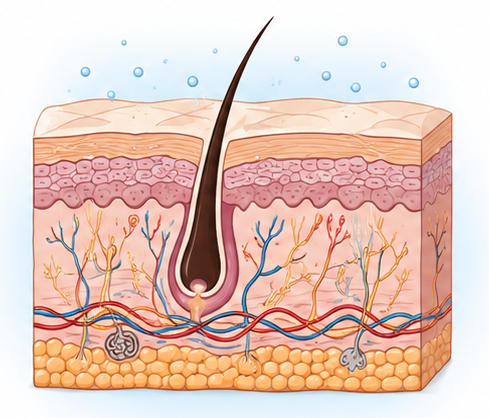

HOMEOSTASIS
Stability through regulation
Key internal variables are maintained within a safe range via feedback mechanisms.
Goal: internal stability within safe limits.

The Dynamic Balance for Mind, Body, and Skin
Homeostasis is the dynamic process by which the body maintains internal stability while continuously adapting to internal and external changes.



Understanding three related but distinct concepts.
Stability through regulation
Key internal variables are maintained within a safe range via feedback mechanisms.
Goal: internal stability within safe limits.
Stability through adaptive change
Physiological systems proactively adjust set points and resource allocation to meet challenges or demands.
Goal: prepare and adapt.
Cost of adaptation
Repeated or prolonged activation of allostatic responses can produce cumulative wear and reduced regulatory capacity.
Result: higher risk of dysfunction and disease.
How stressors trigger adaptation and homeostatic responses.
Physiological systems adjust to restore balance.

Feedback systems maintain internal stability.
Supports daily function, resilience, and health.

How dynamic regulation supports psychological balance.

Psychological balance depends on coordinated neural, endocrine, and behavioral regulation rather than a fixed steady state.
Supports a balanced emotional state and resilience.
Enables attention, memory, learning, and clear thinking.
Helps the body respond to stress and return to balance.
Regulates restorative sleep and daily biological rhythms.
Supports adaptive choices and adjustment to change.
Coordinated regulation across organ systems.

Barrier biology, hydration, renewal, and resilience.
Maintains the skin’s physical barrier against environmental stressors and irritants.
Maintains optimal acid mantle to support barrier function and microbial balance.
Provides innate and adaptive immune protection against pathogens and threats.

Maintains skin hydration and minimizes water loss for optimal function.
Supports a balanced skin microbiome for health and resilience.
Drives cell turnover and tissue repair to maintain structure and function.
How chronic or unpredictable stress can undermine regulation.
Most evidence linking stress, regulation, and health outcomes reflects association; support strategies help homeostasis but do not imply simple one-direction causation.